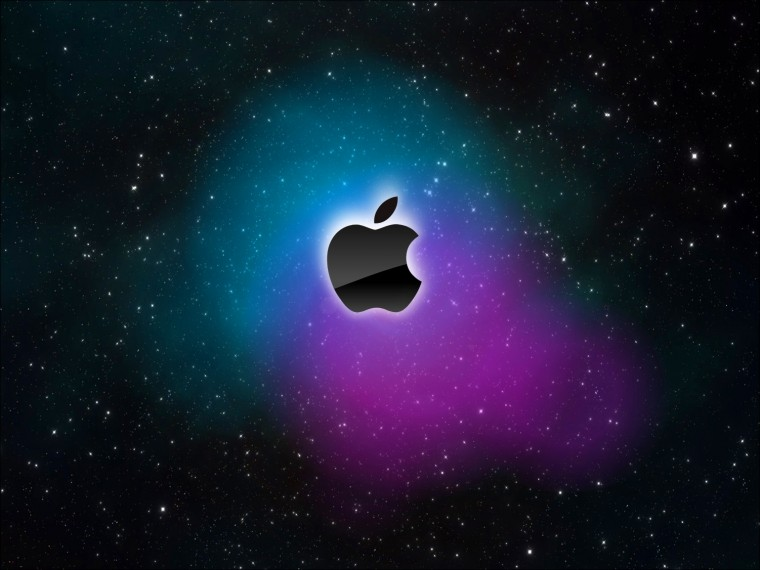

hii i am soundary rewatkar at Kohli (Hindi pronunciation: [ʋɪˈɾɑːʈ ˈkoːɦli] ⓘ; born 5 November 1988) is an Indian international cricketer and the former captain of the Indian national cricket team. He currently represents Royal Challengers Bangalore in the IPL and Delhi in domestic cricket. Kohli is widely regarded as one of the greatest batsmen in the history of cricket, and the best of 21st century.[3] He is the highest run scorer in T20I and IPL. In 2020, the International Cricket Council named him the male cricketer of the decade. Kohli is currently fourth-highest run-scorer in international cricket and stands second in the list of most international centuries scored. He also holds the record for scoring the most centuries in One Day International cricket.[4][5] Kohli was a member of the Indian team that won the 2011 Cricket World Cup and 2013 ICC Champions Trop
